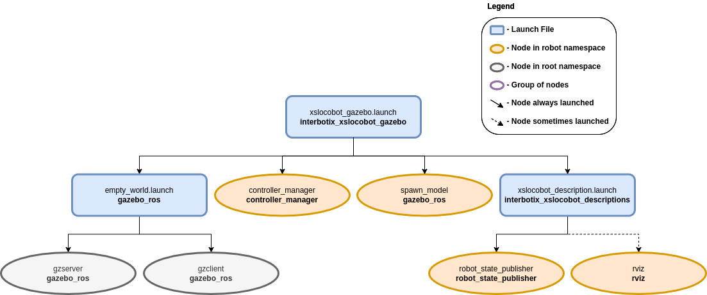

Simulation Configuration
 View Package on GitHub
View Package on GitHub
Overview
This package contains the necessary config files to get any rover in our X-Series Interbotix LoCoBot Family simulated in Gazebo. Specifically, it contains the locobot_configs.gazebo file which allows the black texture of the robot to display properly (following this method) and starts various plugins. It also contains YAML files with tuned PID gains for the arm, gripper, and pan/tilt joints so that ros_control can control the robot effectively. This package can either be used in conjunction with MoveIt via the FollowJointTrajectory interface or by itself via the JointPositionController interface.
Structure
As shown above, the interbotix_xslocobot_gazebo package builds on top of the interbotix_xslocobot_descriptions and gazebo_ros packages. To get familiar with the nodes in the interbotix_xslocobot_descriptions package, please look at its README. The other nodes are described below:
- gzserver - responsible for running the physics update-loop and sensor data generation
- gzclient - provides a nice GUI to visualize the robot simulation
- controller_manager - responsible for loading and starting a set of controllers at once, as well as automatically stopping and unloading those same controllers
- spawn_model - adds the robot model as defined in the 'robot_description' parameter into the Gazebo world
Note that the arm joints can be sent trajectories from MoveIt as they use the
JointTrajectoryController ros_control interface or positions using the
JointPositionController interface. However, the pan/tilt joints operate via the
JointPositionController interface only. To control them, publish position commands directly to the
appropriate topics (ex. /<robot_name>/pan_controller/command for the 'pan' joint).
Usage
To run this package, type the line below in a terminal (assuming the locobot_wx250s is being launched with the lidar attached and using trajectory controllers for the arm).
$ roslaunch interbotix_xslocobot_gazebo xslocobot_gazebo.launch robot_model:=locobot_wx250s show_lidar:=true use_trajectory_controllers:=true
Since by default, Gazebo is started in a 'paused' state (this is done to give time for the controllers to kick in), unpause the physics once it is fully loaded by typing:
$ rosservice call /gazebo/unpause_physics
This is the bare minimum needed to get up and running. Take a look at the table below to see how to further customize with other launch file arguments.
| Argument | Description | Default Value |
|---|---|---|
| robot_model | model type of the Interbotix LoCoBot such as 'locobot_base' or 'locobot_wx250s' | "" |
| robot_name | name of the robot (could be anything but defaults to 'locobot') | "locobot" |
| arm_model | the Interbotix Arm model on the locobot; this should never be set manually but rather left to its default value | refer to xslocobot_description.launch |
| show_lidar | if true, the lidar is included in the 'robot_description' parameter; only set to true if you purchased a lidar with your locobot | false |
| show_gripper_bar | if true, the gripper_bar link is included in the 'robot_description' parameter; if false, the gripper_bar and finger links are not loaded to the parameter server. Set to false if you have a custom gripper attachment | true |
| show_gripper_fingers | if true, the gripper fingers are included in the 'robot_description' parameter; if false, the gripper finger links are not loaded to the parameter server. Set to false if you have custom gripper fingers | true |
| external_urdf_loc | the file path to the custom urdf.xacro file that you would like to include in the Interbotix robot's urdf.xacro file | "" |
| use_rviz | launches RViz; set to false if SSH'd into the physical robot | true |
| rviz_frame | fixed frame in RViz; this should be changed to map or <robot_name>/odom if mapping or using local odometry respectively | $(arg robot_name)/base_footprint |
| world_name | the file path to the Gazebo 'world' file to load | refer to xslocobot_gazebo.launch |
| gui | launch the Gazebo GUI; set to false if SSH'd into the physical robot | true |
| debug | Start gzserver in debug mode using gdb | false |
| paused | start Gazebo in a paused state | true |
| recording | enable Gazebo state log recording | false |
| use_sim_time | tells ROS nodes asking for time to get the Gazebo-published simulation time, published over the ROS topic /clock | true |
| use_position_controllers | set to true to have the ability to command arbitrary positions to the arm joints in Gazebo | false |
| use_trajectory_controllers | set to true to have the ability to command joint trajectories to the arm joints in Gazebo | false |
| dof | degrees of freedom of the specified arm (only necessary if use_position_controllers is set to true) | 5 |